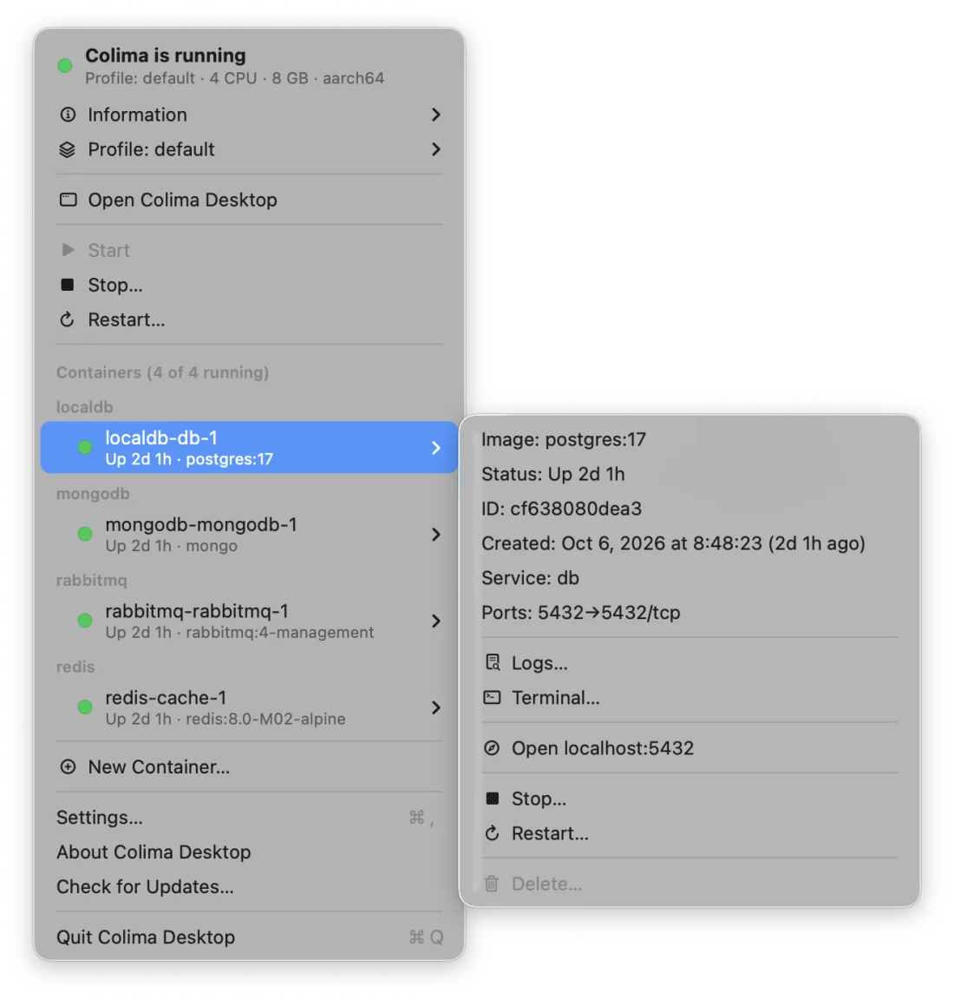
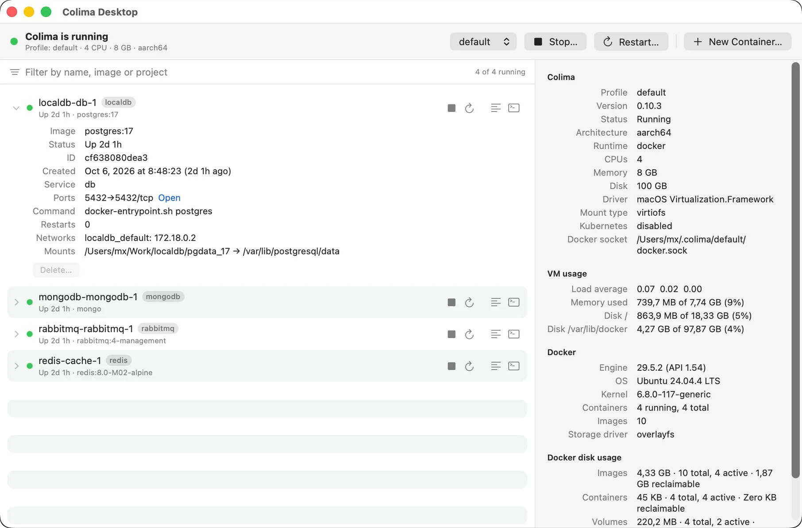
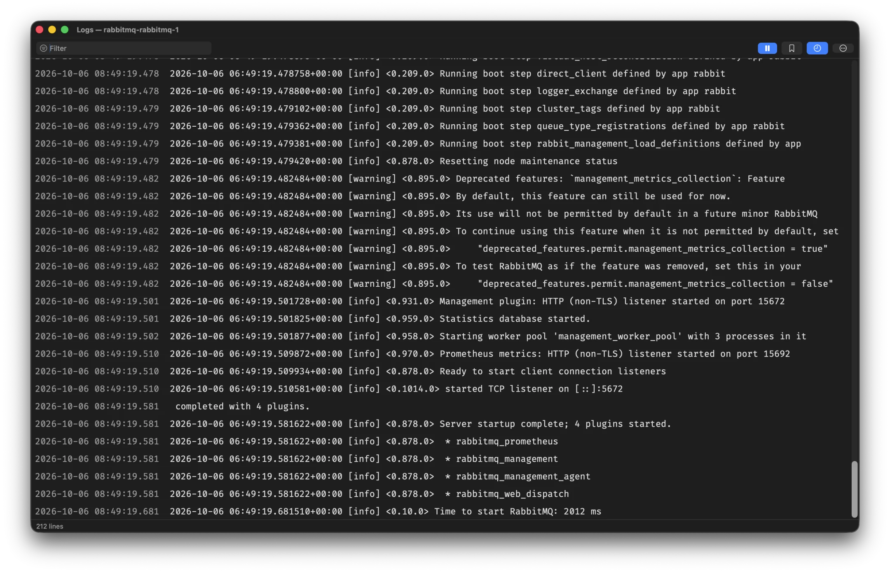
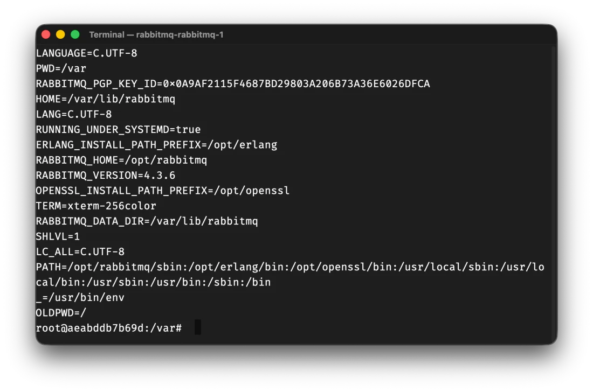

macOS 26+ · Apple silicon & Intel · v0.8.1
Colima,
from the menu bar.
Start and stop the VM, switch profiles, and reach every container — its logs, a shell, its ports — from one llama in the menu bar. Colima Desktop talks to Colima and to the Docker Engine API directly, so the docker CLI is not needed.
ColimaDesktop-0.8.1.dmg · all releases
Needs Colima: brew install colima
Start · stop · restart
The VM's state is the menu bar icon. Stop and restart ask first, colima's progress shows under the status while it works, and a notification says when it is done.
Every container, grouped
Running and stopped, grouped by Compose project. Each one has its details, logs, a shell, its published ports, start, stop and restart — and delete, once it is stopped. New Container… finds an image on Docker Hub and runs it with your ports, variables and volumes. For long lists, the Colima Desktop window shows the same, with a filter.
Logs that keep up
Follow or pause, filter with highlighting, stderr in red, and markers you drop yourself so new lines are easy to spot. A bounded buffer and a virtualized list stay responsive.
A shell in the container
An embedded terminal over the Engine API's exec endpoint — no Terminal.app round trip and no docker CLI. The TTY resizes with the window. Pick its font, size and line height, and keep it dark while the rest of the app follows macOS — the logs have their own settings.
Information on demand
VM load, memory and disks, Docker engine facts and disk usage, read only while the Information submenu is open. Click a row to copy its value.
Zero configuration
Finds colima, its home directory and the Docker socket the way colima itself does. Profiles switch from the menu; paths and sockets can be overridden in Settings.
The menu
Everything one click from the menu bar.
The status row says whether Colima runs, with the profile and its CPUs, memory and architecture. Information shows the VM's load, memory and disks and Docker's engine facts and disk usage; click a row to copy it. Start, Stop… and Restart… control the VM, and stopping or restarting asks first.
Each container has its own submenu: image, status, ID and ports, then Logs…, Terminal…, Open localhost:PORT, and start, stop, restart or delete. Durations count up while the menu is open. New Container… creates one from an image on Docker Hub, and Open Colima Desktop opens the window.

The window
The same, in a window, for long lists.
On the left, the containers: filter by name, image or project, start or stop, restart, open the logs or a terminal. A row expands to its ports, command, health, restarts, networks and mounts, and right-click has every action. On top, the Colima status, the profile, the VM's controls and a button for a new container.
On the right, the environment: Colima, VM usage, Docker and its disk usage, kept fresh
while the window is open. The window has its own menu bar (⌘L logs,
⌘T terminal, ⌘N new container). Open it from the menu, or by
starting Colima Desktop again; it has a Dock icon only while it is open.

Menu bar icon
The llama tells you how the VM is doing.
Four styles, picked in Settings, all drawn in code from the Colima logo. Three are template images that follow the menu bar's light and dark look; the status light keeps its colours and is redrawn when the bar changes.
- Cubes
- filled when running, hollow when stopped, filling up while it changes
- Light
- green, amber while starting or stopping, red when stopped
- Symbols
- play, pause while it changes, stop
- Container
- the first icon, kept for those who liked it
Logs
Drop a marker, then watch what happens next.
Marker (⌘M) writes a timestamped line into the log, so the
output of the request you are about to make starts right below it. Scrolling up pauses
following; the status bar counts what arrived meanwhile.
The filter matches as you type and keeps markers visible. Lines the container writes to stderr show in red. Copy and Save export exactly the lines on screen. When the container stops, the window says so and offers to reconnect from where it left off.

Terminal
A shell in the container, in its own window.
Terminal… opens a shell through the Engine API's exec endpoint: bash when the image has it, otherwise sh, or a command you set in Settings. Full-screen programs such as vim and htop work, the TTY follows the window's size, and when the shell exits, Reconnect opens a new one.
The terminal and the logs each have their own font, size, line height and appearance (System, Light or Dark), apart from the rest of the app.

Updates
New versions install themselves, not in your way.
Once a day, Colima Desktop checks for a new version with Sparkle, downloads it in the background and installs it the next time the app quits. To have it now, choose Restart to Update to 0.8.1 in the menu. No window opens on its own; once the new version runs, a notification says so.
Check for Updates… asks right away. Settings → Updates turns off the background download — the menu then offers Update to 0.8.1… instead — or the daily check altogether, and switches the update channel to Beta for pre-release versions. Every release is signed with the project's update key, and the app refuses an update whose signature does not match the key it ships with.
Updates started with 0.6. Coming from 0.5, install the current version by hand once.
Under the hood
Colima's CLI for the VM, Docker's API for the rest.
VM operations run colima without a shell. Everything about containers goes
straight to the profile's Docker socket over HTTP — listing, actions, streamed logs, and
the exec connection the terminal rides on.
The menu stays current without polling hard: it watches Colima's directories for the VM starting and stopping, follows Docker's event stream for containers, and refreshes every two seconds only while the menu is open — updating it in place, so an open submenu stays open.
Built with
Swift 6 with strict concurrency, AppKit for the menu, SwiftUI for the windows, SwiftTerm for the terminal and Sparkle for updates. Layers are separate Swift package targets, so the compiler keeps the views away from processes and sockets. Tests cover the HTTP framing, log decoding and menu logic, and integration tests run against a real Colima.
Getting it running
-
01 · Colima
brew install colima, thencolima start— or let the app start it. Container features need the Docker runtime, which is Colima's default. -
02 · Install
Open the DMG and drag Colima Desktop to Applications.
-
03 · Open it once by hand
The build is signed ad hoc rather than with an Apple Developer ID, so macOS refuses the first launch. Right-click it in Applications, choose Open, confirm. Once only — after that the app updates itself.